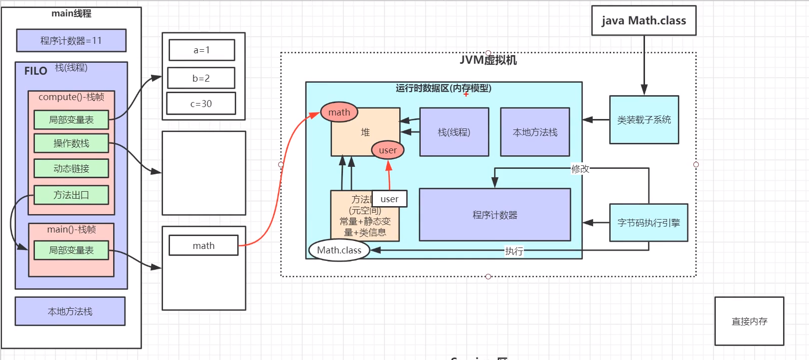

面试
JVM
类加载器
双亲委派机制:安全
App-->EXC--BOOT(最终执行)
类加载器收到类加载的请求
将这个请求向上托付给父类加载器去完成,一直向上委托,直到启动类加载器
启动加载器检查是否能够加载当前这个类,能加载就结束,使用当前加载器,否则抛出异常,通知子类加载器进行加载
重复步骤3
最底层用c写,所以返回null,java获取不到
BootstrapClassLoader（启动类加载器）
c++编写，加载java核心库 java.*,构造ExtClassLoader和AppClassLoader。由于引导类加载器涉及到虚拟机本地实现细节，开发者无法直接获取到启动类加载器的引用，所以不允许直接通过引用进行操作
ExtClassLoader （标准扩展类加载器）
java编写，加载扩展库，如classpath中的jre ，javax.*或者java.ext.dir 指定位置中的类，开发者可以直接使用标准扩展类加载器。
AppClassLoader（系统类加载器）
java编写，加载程序所在的目录，如user.dir所在的位置的class
CustomClassLoader（用户自定义类加载器） java编写,用户自定义的类加载器,可加载指定路径的class文件
沙箱安全机制
native
凡是带了native关键字的,说明java的作用范围达不到了,去底层调用c语言,会进入本地方法栈 java native interface
JNI :扩展Java的使用,融合不同的编程语言为Java所用
PC 寄存器
每个线程都有一个程序计数器,是线程私有的,是一个指针,指向方法去种的方法字节码(用来存储指向像一条指令的地址 ,也即将要执行的代码),在执行引擎读取下一条指令,是一个非常小的空间,几乎可以忽略不计
方法区
方法去被所有线程共享,所有字段和方法字节码,以及一些特殊方法,如构造函数,接口代码也在此定义 简单说,所有定义的方法都保存在该区域,此区域属于共享区间
静态变量,常量,类信息(构造方法,接口定义),运行时的常量池存在方法区中,但是实例变量存在堆内存中,和方法区无关 jvisualvm
栈
栈帧
一个方法对应一块栈帧内存区域
局部变量表
操作数栈
动态链接
方法出口

程序计数器
javap
javap -c xxx.class反编译 > xxx.txt
堆
直接内存

年轻代(1/3)
Eden(8/10)(minor gc区)
Survivor区(2/10)
s0(1/10)
s1(1/10)
老年代(2/3)
垃圾回收
gcRoot : 线程栈的本地变量,静态变量,本地方法栈的变量等等
Object
jdk1.6之前:永久代,常量池在方法区
jdk1.7:永久代,慢慢退化,
去永久代,常量池在堆中jdk1.8之后:无永久代,常量池在元空间

Eden堆满 -->minorgc( 查找gcRoot-->可达性分析算法 -->分代年龄+1 -->复制到s0堆,清理Eden)
Eden堆满 -->minorgc( 查找gcRoot-->可达性分析算法 -->分代年龄+1 -->复 制到s1堆,清理Eden+s1) 之后s1 s2 反复横跳
分代年龄>=15时,转移到老年代堆
老年代堆满-->full gc -不能回收-> OOM
调优
目的: 减少STW(stop the world)
gc的时候会停止所有线程 为什么?
MySQL
慢SQL -优化-> 加索引
索引: 采用B+树数据结构,两次IO,内存取数 16kb一层 1170117016,单个节点8kb,6kb
聚集索引:叶子节点包含数据
非聚集索引:MYI查找后从MYD中找数据(通过磁盘地址)
innodb 必有主键索引,如果没设置,会构建隐藏列维护表结构
联合索引 排序 数据结构 B+Tree
Redis
JMM
JSR-133
并行消息
线程:程序进行的载体
JMM 八大原子操作
lock
unlock
read
load
use
assign
store
write
volatile 可见性原理
底层实现: 通过汇编lock前缀指令触发底层缓存锁定机制(缓存一致性协议&总线锁)
缓存一致性协议:
msi mesi
分布式锁
synchronized
基于c++,语言实现的同步机制
AQS 同步器
HashMap
数组+链表
红黑树:
接近平衡的二叉搜索树,在每个节点上增加一个存储位表示节点的颜色,可以是Red 可以是Black,通过对任何一条从根到叶子的路径上各个节点着色方式的限制,红黑树确保没有一条 路径会比其他路径长处两倍,因而是接近平衡的
支持查找,插入,删除等操作,复杂度最坏为O(logn)
每个节点要么红要么黑
根节点是黑的
每个叶子节点(叶节点即指树尾端NIL指针或NULL节点)都是黑的
如果一个节点是红的,那么他的两个子节点都是黑的
对于任意节点而言,其到叶子节点树尾端NIL指针的每条路径都包含相同数目的黑节点 数组长度必须2的指数幂 寻找最近的较大的2的指数幂
线程不安全 多线程扩容 会形成环形链表
扩容因子:0.75
Spring
SpringIOC
控制反转(目的) 依赖注入(手段)
谁控制谁 IOC控制对象
控制什么 对象
为什么要反转
哪些方面反转了 创建权力反转
ApplicationContext
ApplicationContext
BeanFactory
IOC容器
singletonObjects 单例缓存池
BeanDefinitionSet ...一系列组件 Spring Bean 生命周期 @controller等注解被解析成BeanDefinitionSet-> bean定义对象->BeanFactoryPostProcessor->getBean()->BeanPostProcessor->单例对象生成好
SpringBoot
自动装配
自动流程{ jar包 war包 }
@Import